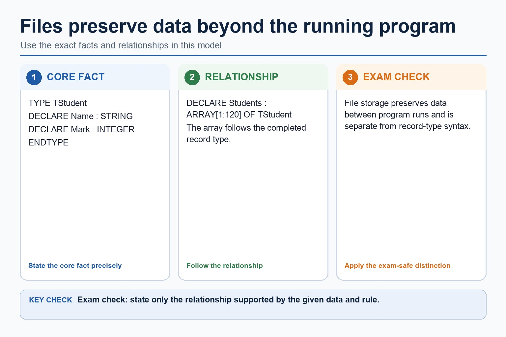
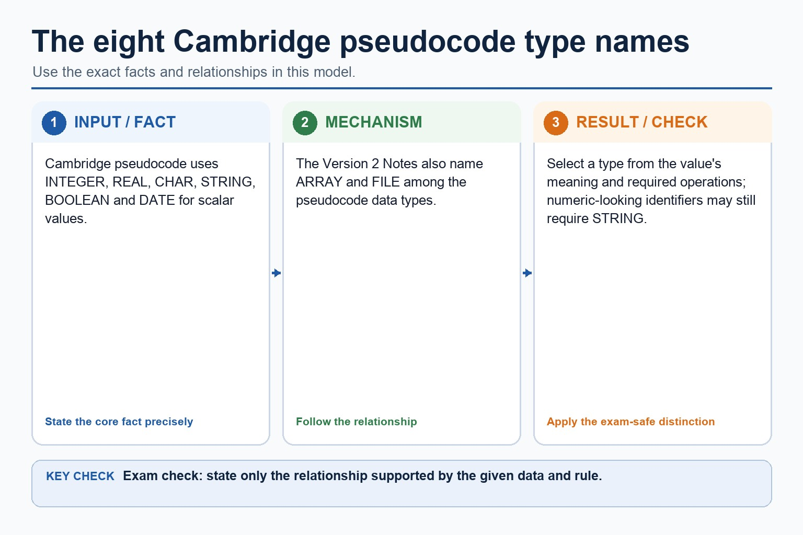
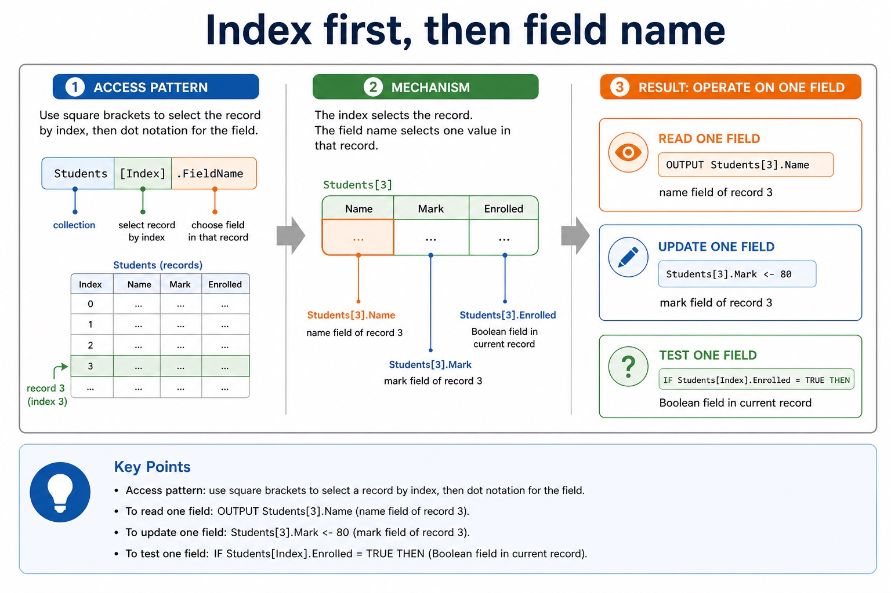
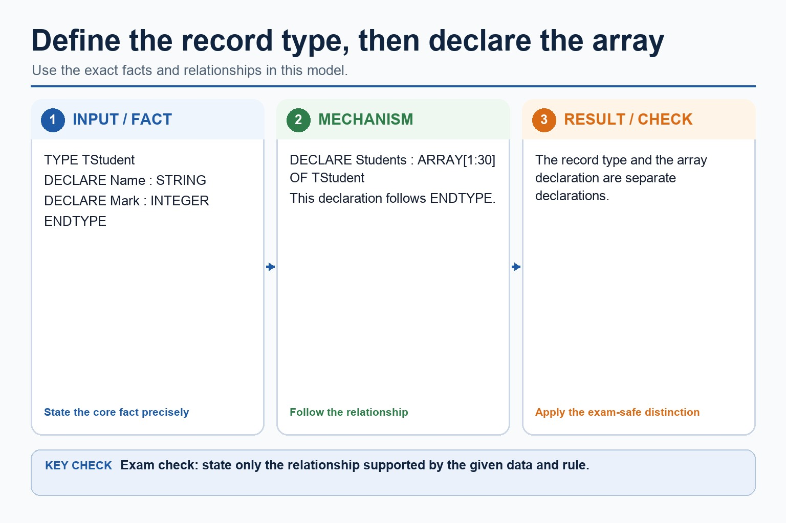
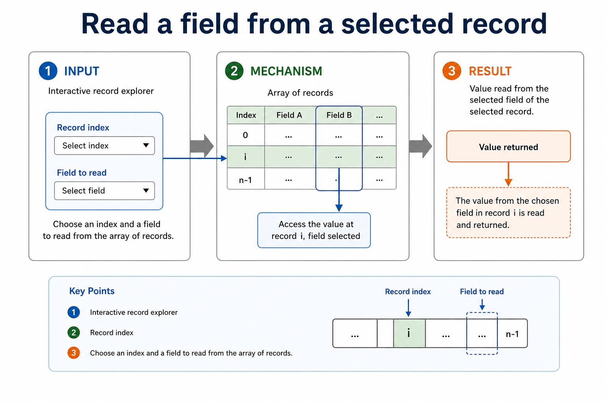
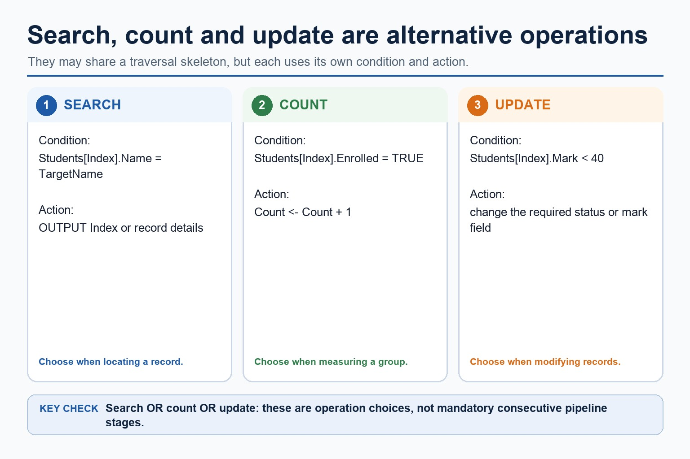
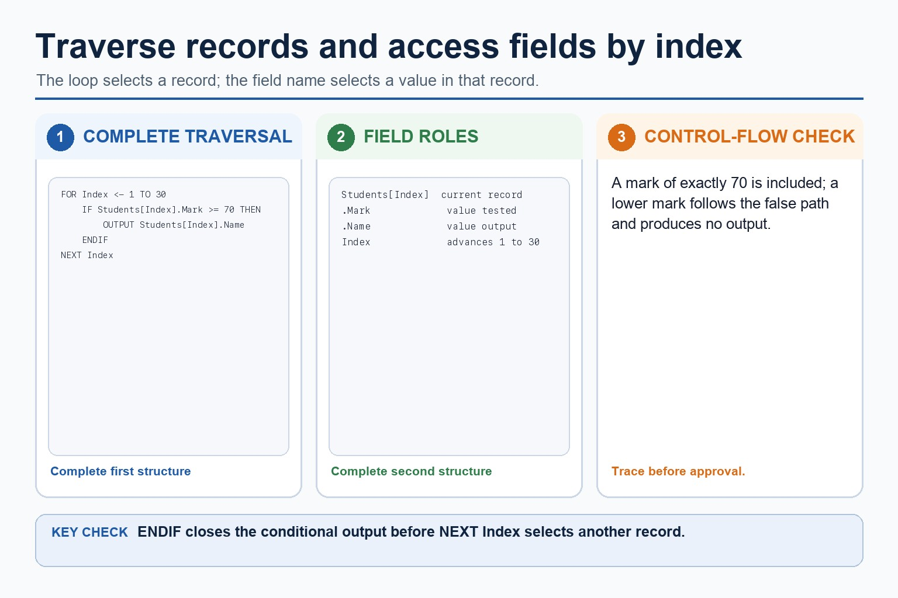

Cambridge AS9618 | Paper 2 | Section 10: Data types and structures
Why files are needed and text-file pseudocode
Flexible-depth lesson
S10.07 | Learn from the diagrams, test the method, then choose the practice you need.
Choose a Quick, Full or Deep route
Quick route
Use the diagnostic, learning objectives, first worked example and foundation question. Stop once the learner can explain the central distinction accurately.
Full route
Use every knowledge-point material set, the worked method, the terminology check and all questions.
Deep route
Add the prerequisite refresher, ask learners to connect the concept checklist, discuss the labelled extension and complete a transfer question without a model answer.
Part 1 | optional depth
Prerequisite knowledge and quick diagnostic
Recall S10.01 before starting this lesson.
Give one accurate definition or method step before continuing. If it is missing, revisit only that prerequisite.
Open optional prerequisite refresher
Select and use appropriate types for a problem solution. The Version 2 Notes name integer, real, char, string, Boolean and date, and require the Cambridge pseudocode type names INTEGER, REAL, CHAR, STRING, BOOLEAN, DATE, ARRAY and FILE.
Understand integer, real, char, string, Boolean and date types and Cambridge pseudocode type names.
Part 2 | knowledge-point material sets
Learn each point through visuals
Follow the map, the three-part explanation and the concrete cue. Open precise wording only after the idea is clear.
Open the concept checklist and choose what to teach
files
persistent
text file
pseudocode
01
S10.07 · process
Files · Persistent · Text file · Pseudocode
Concept map
filespersistenttext filepseudocode
See how it works
StartShow why files are needed for persistent data beyond one program run, and write Cambridge pseudocode to handle text files consisting of one or more lines,…
ChangeFor a text file containing one or more lines, select the mode before processing
CheckEvery opened file must be closed after processing
S10.07 diagrams
1 / 4
01
Diagram · 1 of 4
Cambridge pseudocode is the exam answer format
Open text transcript
Pseudocode vs Java
Cambridge-style pseudocode
OPENFILE "Scores.txt" FOR READ
WHILE NOT EOF("Scores.txt")
READFILE "Scores.txt", Line
OUTPUT Line
ENDWHILE
CLOSEFILE "Scores.txt"
02
Process · 2 of 4
A text file stores characters, usually processed one line at a time
Open text transcript
Exam clue
Text file
file containing character data
"Scores.txt"
get data from an existing file
FOR READ
store data to a file, often replacing previous contents
FOR WRITE
03
Diagram · 3 of 4
Files preserve data beyond the running program

Open text transcript
TYPE TStudent
DECLARE Students : ARRAY[1:120] OF TStudent
File storage preserves data between program runs and is separate from record-type syntax.
04
Diagram · 4 of 4
The eight Cambridge pseudocode type names

Open text transcript
Cambridge pseudocode uses INTEGER, REAL, CHAR, STRING, BOOLEAN and DATE for scalar values.
The Version 2 Notes also name ARRAY and FILE among the pseudocode data types.
Select a type from the value's meaning and required operations; numeric-looking identifiers may still require STRING.
Open precise syllabus wording
Explain the need for files and use text-file pseudocode.
Show why files are needed for persistent data beyond one program run, and write Cambridge pseudocode to handle text files consisting of one or more lines, including opening, processing and closing in the correct mode.
Supporting diagram library
1 / 7
01
Diagram · 1 of 7
Index first, then field name

Open text transcript
Access pattern
Pseudocode
Read one field
OUTPUT Students[3].Name
name field of record 3
Update one field
Students[3].Mark <- 80
mark field of record 3
02
Diagram · 2 of 7
One array, many records, same record shape
Open text transcript
Students[5] selects the complete record at array position 5.
Students[5].Mark selects the Mark field in that record.
Array indexing and record field selection are separate operations.
03
Diagram · 3 of 7
Define the record type, then declare the array

Open text transcript
TYPE TStudent
DECLARE Students : ARRAY[1:30] OF TStudent
The record type and the array declaration are separate declarations.
04
Diagram · 4 of 7
Read a field from a selected record

Open text transcript
Interactive record explorer
Record index
Choose an index and a field to read from the array of records.
05
Diagram · 5 of 7
Search, count and update fields

Open text transcript
Search, count and update are alternative record operations, not mandatory consecutive stages.
A search condition locates a matching record and outputs its position or details.
A count condition increments a counter for qualifying records.
An update condition changes the required field of qualifying records.
06
Diagram · 6 of 7
Same structure, different syntax
Open text transcript
Pseudocode vs Java
Cambridge-style pseudocode
DECLARE Students : ARRAY[1:30] OF TStudent
FOR Index <- 1 TO 30
OUTPUT Students[Index].Name
NEXT Index
Java support only
Student[] students = new Student[30];
07
Diagram · 7 of 7
A loop visits each record; field access uses the loop index

Open text transcript
Use Index to select each Students record in turn.
Test the Mark field of the current record.
Output the Name field only when Mark is at least 70.
Close the selection with ENDIF before NEXT Index.
Apply the idea
Worked method
01Copy selected lines between text files
02Open Results.txt FOR READ and Pass.txt FOR WRITE.
03While NOT EOF(Results.txt), READFILE the next Line; if it contains PASS, WRITEFILE it to Pass.txt.
04Close both files after the loop.
05Results remain available from storage, while Pass.txt is deliberately created as a new output file.
Open precise terminology and exam facts
Show why files are needed for persistent data beyond one program run, and write Cambridge pseudocode to handle text files consisting of one or more lines, including opening, processing and closing in the correct mode.
Variables, arrays and records in main memory normally lose their contents when a program ends or power is removed. Files provide persistent storage so data can be reloaded by a later run, transferred or shared as required. A file is not merely a larger array.
For a text file containing one or more lines, select the mode before processing: READ obtains existing data, WRITE creates or replaces output content, and APPEND adds after existing content. Every opened file must be closed after processing.
A complete read algorithm uses OPENFILE for READ, checks NOT EOF before READFILE, processes each line and then CLOSEFILE. WRITEFILE stores a line in a file opened for WRITE or APPEND. Reading after EOF or using WRITE when old content must remain are boundary errors.
Beyond syllabus / 延伸知识（不要求背诵）
programming libraries often provide tested ADT implementations, but the exam expects you to understand their behaviour and selection.
Part 3 | select by learner need
Practice by question type
writerecallfoundation6 marks
Question 1. Write Cambridge pseudocode to read every line from Input.txt, copy non-blank lines to Output.txt and close both files. Explain why the input data is stored in a file.
Show answer and marking guidance
Answer: persistent/later-use need for the input file; opens Input.txt FOR READ; opens Output.txt FOR WRITE; loops WHILE NOT EOF before READFILE; writes only non-blank lines inside a coherent IF; closes both files after the loop
Marking guidance: Do not test EOF after an invalid read or claim that WRITE preserves existing output-file contents.
Common error: For the command word write, perform that exact action; do not replace it with an unrelated fact.
explainexplainapplication2 marks
Question 2. Why use a file instead of only an array?
Show answer and marking guidance
Answer: A file persists after the program ends and can be reloaded in a later run.
Marking guidance: Award one mark for each distinct, technically accurate point or method step.
Common error: Do not repeat the same point in different words; each mark needs a separate idea or method step.
explainexplaintransfer2 marks
Question 3. Why test NOT EOF before READFILE?
Show answer and marking guidance
Answer: It prevents an attempt to read beyond the final available line.
Marking guidance: Award one mark for each distinct, technically accurate point or method step.
Common error: Do not copy the worked example unchanged; transfer the method and check it against the new context.
Related past-paper indexes
Reference
Marks
Command word
Question type
9618/22/S/25 Q5(b)
8
complete
recall
9618/22/S/24 Q8(c)
8
give
write
9618/23/S/24 Q2(a)
5
outline
explain
9618/21/W/24 Q3(a)
4
complete
recall
Index only: Cambridge question and mark-scheme wording is not reproduced on this public course page.
Part 4 | close when ready
Summary and exam reminders
Summary
Define why files are needed and text-file pseudocode with the exact technical vocabulary expected by the syllabus.
Use the lesson method on a fresh context and show the intermediate decision, representation or calculation.
Match the shape of the answer to the command word and the available marks.
Check the final answer against the scenario instead of repeating a memorised sentence.
Common error to correct
Students often confuse the identifier of the whole structure with one element. Correction: access requires an index or field name.
Exam technique
Follow the command word: state gives a fact; explain links a cause to a consequence; compare covers both sides.
Match the number of independent points or method steps to the available marks.
For why files are needed and text-file pseudocode, use the exact technical term before applying it to the scenario.